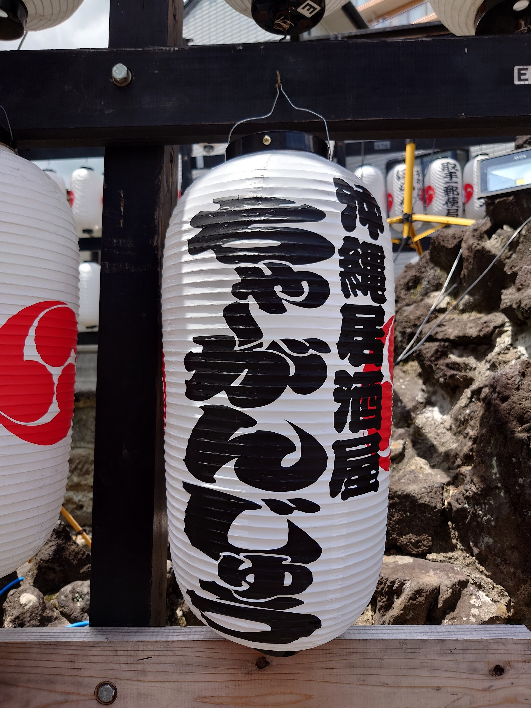
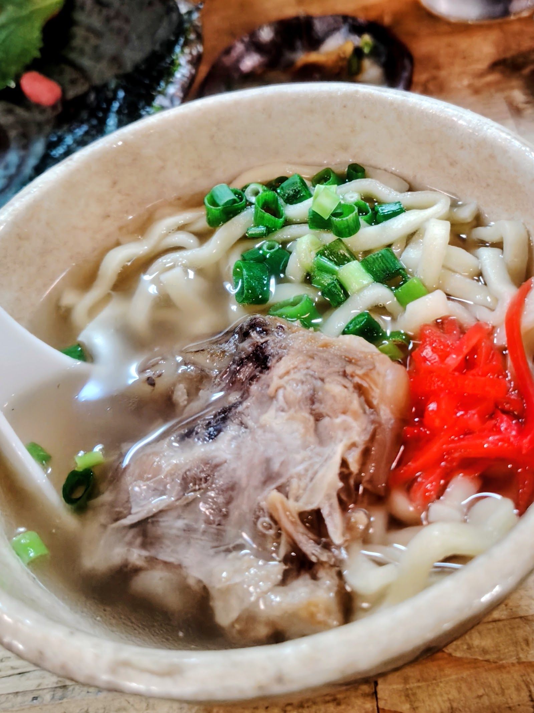
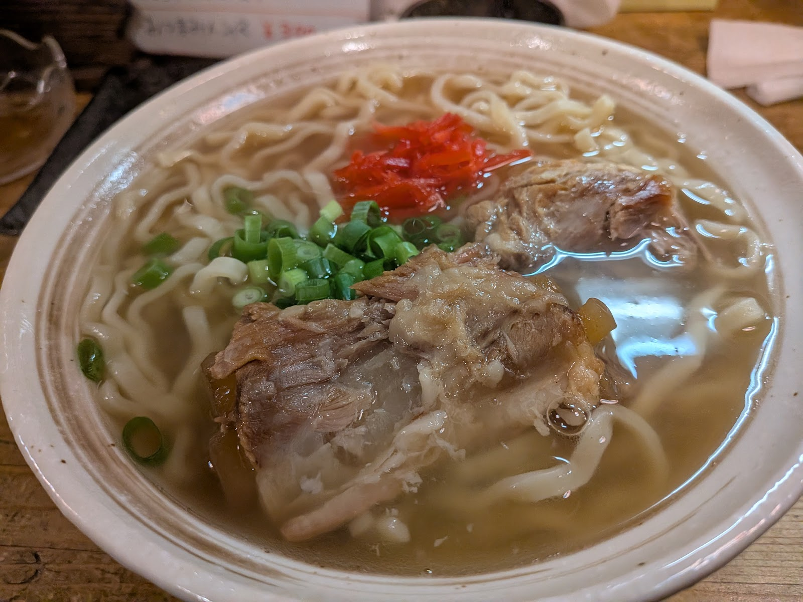
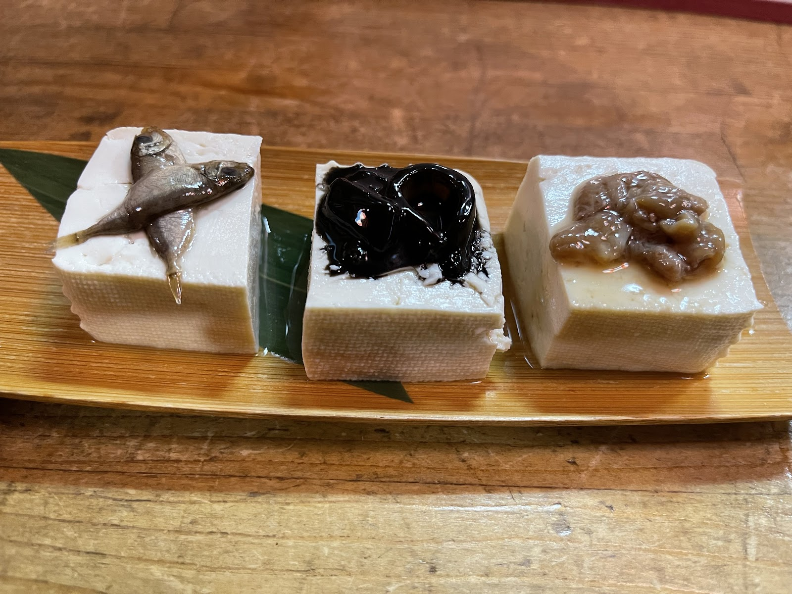

屋号の由来
"ちゃ～がんじゅう"という言葉
"ちゃ～がんじゅう"は、沖縄の言葉で"いつも健やかに、元気に"という意味を持つ言葉です。カウンターの向こうから届く笑い声や、あたたかい家庭料理、じっくり味わう泡盛の時間。そのひとつひとつが、今日一日を過ごした人の元気につながるように、との思いをこの屋号に込めています。新取手の路地の奥で、今日も暖簾をくぐる誰かを迎えています。

写真提供:カズボウ

写真提供:沖縄料理 呑み食い処ちゃ～がんじゅう
つくる人
カウンターの向こうは、いつも沖縄
厨房とカウンターに立つのは、沖縄出身の店主と、そのお姉さんの二人です。生まれ育った沖縄の家庭料理を、この土地でそのまま届けたいという思いから、二人で毎日お店に立っています。カウンター越しに交わす会話は賑やかで、常連の方はもちろん、初めて一人で暖簾をくぐる方にも、気さくに声をかけてくれます。
お店についてもっと知る食卓とお酒
ウチナーの食卓と、泡盛と。
沖縄の食卓に欠かせない麺料理や、島豆腐を使った料理、豊富に取り揃えた泡盛。品書きの一つひとつに、沖縄の家庭の味がそのまま息づいています。詳しい品目やその日のお品書きは、お電話にてお気軽にお尋ねください。



お客様の声
常連さんも、ふらりと一人でも。
Googleでいただいたクチコミは、評価4.7、32件。常連の方も、ふらりと一人で立ち寄った方も、思い思いの言葉でこの店を語ってくれています。